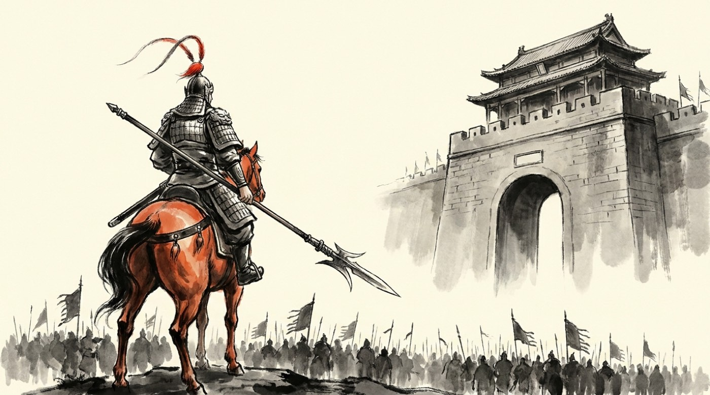

皇帝を、取りかえる
董卓は、西の国ざかいで異民族と戦ってきた男でした。 体が大きく、両手で弓を引けたといいます。都の作法は知りません。 知る必要もなかった。連れてきた軍が、都のどの勢力よりも強かったからです。
洛陽に入った董卓が最初にやったのは、 皇帝を取りかえることでした。 幼い皇帝を「頭が悪いから」という理由で下ろし、その弟をすわらせる。 本来そんなことができる立場ではありません。 それでも誰も止められなかった。反対した人は、その場で斬られたからです。
やがて董卓は、宴会の席で捕虜を目の前で殺しながら平気で食事を続け、 お金が足りなくなると歴代の皇帝の墓を掘り返して宝を持ち出しました。 何太后も毒を飲まされて殺されます。 都に、味方はもういませんでした。
曹操は、董卓に気に入られたふりをして近づき、 刀で刺そうとします。鏡にうつって気づかれ、とっさに 「名刀を献上に参りました」と言いぬけて逃げた——これは小説の名場面です。 逃げた曹操は故郷で兵を集め、各地に手紙を送りました。 「みんなで董卓を討とう」と。
曹操が刀で董卓を暗殺しようとした話は、小説の作り話です。 実際の曹操は、董卓から役職をもらいそうになったのを断り、 名前を変えて都から逃げ出しています。
集まったけれど、戦わない
手紙に応じて、各地の有力者が集まりました。リーダーに選ばれたのは、 家がらがずばぬけている袁紹。 その弟の袁術が食糧をあずかります。 劉備と二人の義兄弟も、ボランティアの部隊として末席に加わりました。
ところが、この連合はほとんど戦いませんでした。 全員が「他人の兵で董卓を倒して、手がらだけ持って帰りたい」と考えていたからです。 毎晩、酒だけが減っていきます。
本気で攻めたのは二人だけでした。曹操と、孫堅です。 もっとも曹操は滎陽で大負けし、馬を失って死にかけます。 そのとき自分の馬をゆずり「私はいなくてもいい、あなたがいなければならない」と言って 走ったのが、いとこの曹洪でした。
孫堅は先ぽうとして突っこみ、程普たちを率いて何度も董卓軍を破ります。 ところが後方の袁術が、孫堅に手がらを独りじめされるのを嫌がって食糧を止めました。 味方に、後ろから足を引っぱられたのです。
そして虎牢関という関所の前に、あの男が立ちはだかります。 呂布。
赤兎馬という名馬にまたがった呂布に、諸侯の将は次々と斬られました。 誰も前に出なくなったとき、進み出たのが張飛です。続いて関羽、そして劉備。 三人がかりで、やっと互角——小説でいちばん有名な一騎打ち、 三英戦呂布です。

上の二つは反董卓連合（190年）。三人がかりでやっと引き分けというのが、
呂布の強さを表す場面です。連合のうち本気で攻めたのは孫堅と曹操だけで、
洛陽まで攻めこんだのは孫堅でした。
三つめは192年の暗殺。呂布はもともと董卓の養子です。
最強の武将が、育ての親を宮門で突き殺しました。
三人がかりの一騎打ちは小説の作り話です。 実際には、劉備たち三人はまだ無名で、この戦場にいた記録がありません。 呂布を本当に破ったのは孫堅の軍でした。
都が、燃える
追いつめられた董卓は、信じられない手に出ます。 洛陽を捨てて、西の長安へ都を移す—— それも、街に火を放って。
二百年の都が焼けました。宮殿も、市場も、住んでいた人たちの家も。 数十万人が泣きながら西へ歩かされ、途中で倒れた人はそのまま置き去りにされたといいます。
誰もいなくなった焼けあとに、孫堅の軍が入りました。 そこで兵のひとりが、井戸の底に光るものを見つけます。 引き上げてみると、女の人の死体がかかえていたのは—— 玉璽。 歴代の皇帝が受けついできた、天下のしるしでした。
孫堅はこれを誰にも言わず、ふところに入れて故郷へ帰ります。 のちに彼は襄陽攻めで待ちぶせに遭い、落石と矢を受けて死にました。 けれどこの石は、息子の孫策にわたります。 そして孫策は、これを元手に江東を手に入れることになる。
ひとりの娘が、暴君を倒す
長安に移った董卓は、いよいよ手がつけられなくなりました。 連合はとっくにばらばらで、袁紹と袁術の兄弟すら争いはじめている。 力ずくで董卓を倒す道は、もうありませんでした。
そこで年老いた大臣の王允が考えたのは、 まったくちがう攻め方です。
董卓の強さは、養子にした呂布の強さでした。 なら、その二人を仲たがいさせればいい。 王允は、屋敷で育てた娘同然の貂蝉に、この計画を打ち明けます。 彼女は自分から「やらせてください」と答えました。
貂蝉はまず呂布に引き合わされ、結婚の約束をします。 そのすぐあと、王允は同じ娘を董卓に差し出しました。 自分の女を父に取られた——そう思った呂布の中で、 何年もためこんできた不満に火がつきます。
192年。呂布は宮門で、董卓を突き殺しました。 暴君の死体は市場にさらされ、腹の脂に灯心を立てて火をつけると、 何日も燃え続けたと伝わります。それほど憎まれていた人でした。
貂蝉は小説が生んだ人物で、歴史の記録には出てきません。 記録にあるのは「呂布が董卓の侍女とひそかに付き合い、ばれるのをこわがっていた」という一文だけ。 その一行から、あの見事な計略の物語が作られました。
勝ったあとが、下手だった
ここで終われば、王允は英雄でした。 けれど彼は、董卓の部下だった人たちをひとりも許そうとしませんでした。
行き場を失った部下たちは、どうせ死ぬならと兵をまとめて長安へ攻め上がります。 王允は殺され、呂布は都を追われて放浪の身になりました。 皇帝は、また別の乱暴者の手に落ちます。
悪は倒れました。けれど、誰も次のことを考えていなかった。 この空白に、いちばん早く手をのばした男がいます。 ——曹操です。
- 董卓が皇帝を勝手に取りかえ、洛陽を焼いて長安へ移った。悪政が各地の有力者を団結させたが、その連合はほとんど戦わなかった。
- 焼けあとで孫堅が皇帝のしるし（玉璽）を拾う。これがのちに、孫家が江東を得るきっかけになる。
- 王允と貂蝉の計略で董卓は呂布に殺される。しかし勝ったあとの後始末に失敗し、都はまた混乱に戻った。